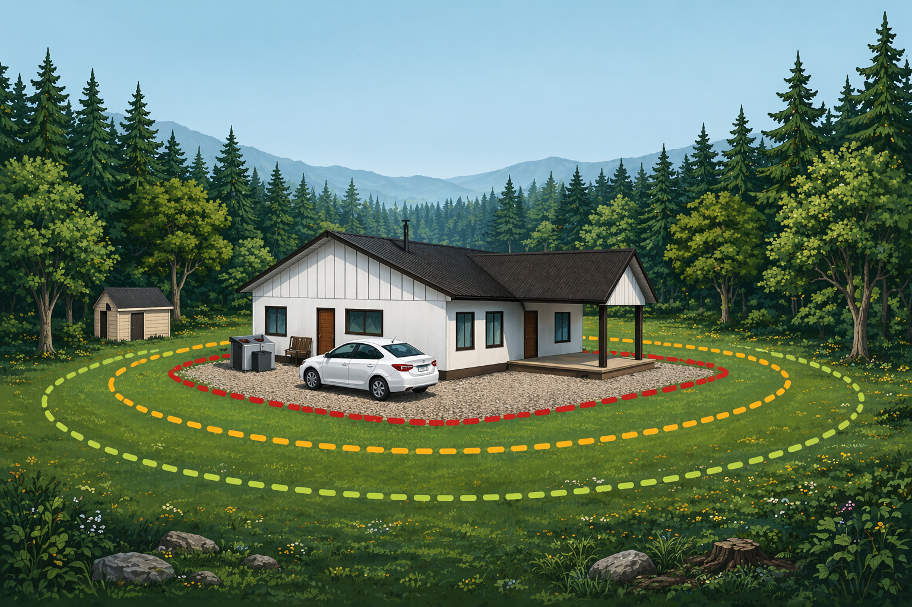

En el patio de la casa todavía se puede ver el tambor. No está instalado como antes, pero sigue ahí, apoyado cerca del muro, esperando volver a su lugar. Durante años estuvo elevado a varios metros de altura y conectado al sistema de agua de la vivienda. Cuando el suministro se cortaba, bastaba abrir una llave para que el agua almacenada bajara por gravedad hacia la casa.
Mariano dice que en algún momento tendrá que volver a instalarlo. No lo plantea como una urgencia, sino como algo pendiente. Para él, guardar agua siempre ha sido una forma de anticiparse.
La historia de Mariano muestra cómo una decisión cotidiana puede transformarse en una forma concreta de preparación frente a distintas emergencias. En territorios donde el fuego, los cortes de suministro y otros eventos críticos forman parte del horizonte posible, almacenar agua no es solo una costumbre doméstica: también es una manera de reducir incertidumbre y sostener la vida diaria cuando el entorno cambia de golpe.
Guardar agua antes de que haga falta
“Siempre hay que estar preparado”, explica. “Si se corta la luz o pasa algo, el agua tiene que estar ahí”.
La población Las Pozas, en Nacimiento, se encuentra rodeada por pastizales y pequeños bosquetes de pinos. Durante el verano, cuando el calor se vuelve más seco y persistente, ese entorno adquiere otra dimensión. El fuego no es algo lejano. Es una posibilidad que aparece cada temporada.
Pero la historia de ese tambor de agua no comenzó en la ciudad.

El sistema de almacenamiento de agua de Mariano surgió como una forma práctica de anticiparse a cortes de suministro y emergencias.
Del campo a la ciudad
Durante años, Mariano vivió y trabajó en un predio rural de la comuna, donde su familia mantiene actividades agrícolas y donde él se dedica a la apicultura. En ese entorno, el fuego forma parte del paisaje de una manera distinta. No siempre llega como un gran incendio, sino muchas veces como pequeños focos que aparecen por descuidos o condiciones del entorno.
Trabajar con abejas implica usar un ahumador, un dispositivo que mantiene brasas encendidas para generar humo y tranquilizar a las colmenas. Ese mismo elemento, si se cae o se destapa sobre pasto seco, puede iniciar un incendio.
“Dentro del ahumador hay brasas”, explica. “Si uno lo deja mal tapado o se cae, puede empezar un incendio”.
Por esa razón comenzó a transportar agua en su vehículo durante la temporada más seca. En la camioneta llevaba un tambor de aproximadamente doscientos litros, junto a una pequeña bomba y un balde. La idea era simple: si aparecía un foco de fuego, el agua tenía que estar cerca.
En varias ocasiones ese sistema permitió controlar incendios pequeños antes de que se propagaran.
Cuando la preparación deja de ser teoría
El verano de 2023 fue distinto.
Ese año, uno de los incendios más grandes que afectó a la zona avanzó rápidamente por distintos sectores rurales de la comuna. Durante la noche, varios caminos quedaron bloqueados y muchas familias debieron abandonar el lugar.
“Salimos como a las cuatro de la mañana”, recuerda. “El fuego venía avanzando y tuvimos que escapar hacia Angol”.
Cuando regresó al día siguiente, gran parte del terreno estaba quemado. La mayoría de sus colmenas se había perdido.
Algunas lograron salvarse. En parte gracias al agua que llevaba en su vehículo y que utilizó para enfriar estructuras y evitar que el fuego terminara de consumirlas. Las pérdidas fueron grandes, pero suficientes colmenas sobrevivieron como para continuar con el trabajo.

En el predio rural donde trabaja con colmenas, Mariano comenzó a transportar agua como una forma de responder a focos pequeños y proteger parte de su trabajo frente al fuego.
La utilidad de guardar agua ya se había hecho evidente mucho antes.
En su casa de la población Las Pozas, en la ciudad de Nacimiento, la utilidad de guardar agua ya se había hecho evidente mucho antes. Después del terremoto de 2010, el suministro se volvió irregular en distintos sectores. Mariano tenía un estanque elevado conectado a la vivienda, pero el agua almacenada se terminó rápidamente. Entonces decidió hacer algo más.
Con su camión comenzó a ir al río a buscar agua para volver a llenar el estanque.
Una y otra vez.
“Yo iba al río a buscar agua y llenaba el estanque”, recuerda. “Después la gente venía a buscar”.
Con el paso de los días, algunos vecinos comenzaron a acercarse a su casa para abastecerse. El estanque no solo permitió sostener a su familia, sino también apoyar a otros en el barrio.
La experiencia reforzó una idea que ya venía construyendo desde antes: en una emergencia, lo importante no es solo que exista agua en el territorio, sino que esté disponible cuando se necesita.
Hoy el estanque elevado ya no está conectado. Una ampliación en la vivienda obligó a desmontarlo temporalmente, pero el tambor sigue en el patio, esperando volver a instalarse.
Además del agua, Mariano mantiene generadores eléctricos en la casa. Uno pequeño para iluminación básica y otro de mayor capacidad que puede alimentar distintos equipos cuando se corta el suministro. Son decisiones prácticas que ha ido incorporando con el tiempo, a partir de distintas experiencias.
Para él, prepararse no tiene que ver con vivir con miedo.
Tiene que ver con la tranquilidad.
A veces comenta que muchas personas no consideran algo tan simple como mantener agua disponible en sus casas. Incluso algo mínimo —como dejar agua caliente desde la noche anterior para poder preparar un café si se corta la electricidad— puede marcar la diferencia cuando ocurre un imprevisto.
“No es algo complicado”, dice. “Es cosa de anticiparse un poco”.
En lugares donde el fuego puede aparecer cada verano —o donde un terremoto puede interrumpir el suministro durante días— esa forma de anticiparse no siempre es visible.
Pero cuando ocurre una emergencia, puede cambiar la manera en que se enfrenta. Mariano no puede evitar que llegue el fuego. Pero sí puede decidir algo antes. Guardar agua.